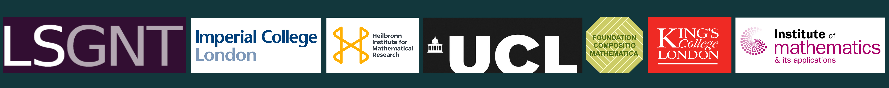

Spring Retreat
This is the webpage for the 2022 edition of the WINGs retreat. The webpage for the 2023 edition can be found here.Description
WINGs 2022 was the second instalment of an annual retreat for women, and other underrepresented genders, in number theory and geometry. It was aimed at early career mathematicians, from PhD onwards. Events included social activities, which encouraged interaction between participants, and short talks, so that participants could learn about each other’s research interests. Our aim was to counteract the isolation which can be experienced by female mathematicians during their career by fostering a sense of community from the start.
The retreat took place in person from the 6th to the 8th of June at West Lexham, Norfolk. Here is the conference photo:

We would like to thank the EPSRC Centre for Doctoral Training in Geometry and Number Theory, University College London, King's College London, Imperial College London, the Institute of Mathematics and its Applications, the Foundation Compositio Mathematica and the Heilbronn Institute for Mathematical Research for their funding and support.
